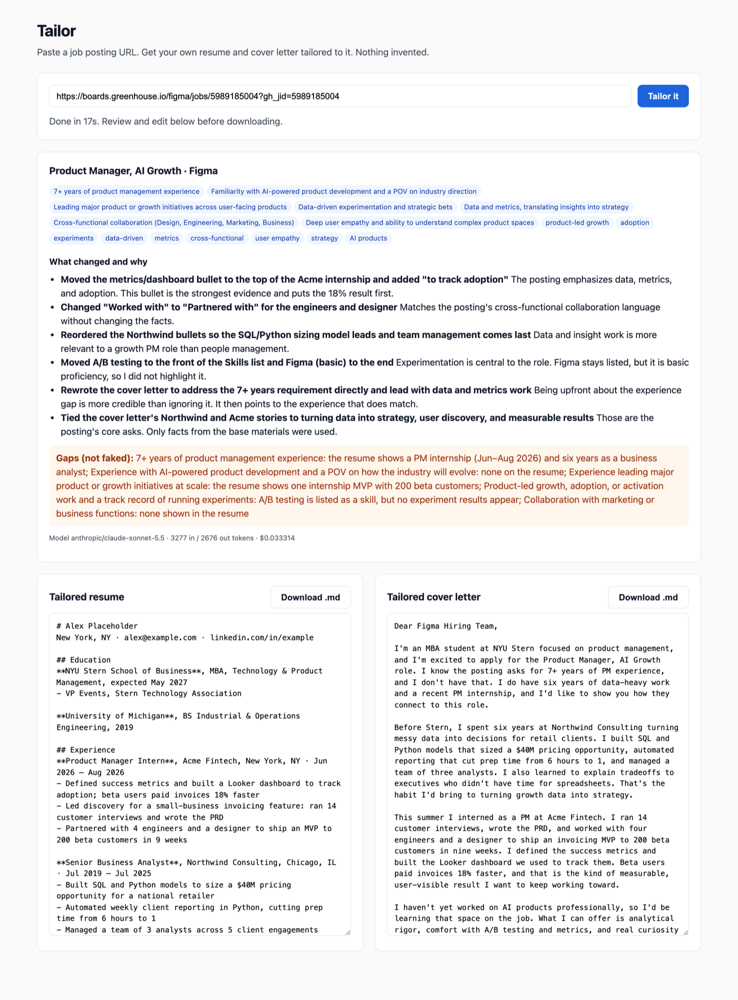

Paste a job posting URL, get your own resume and cover letter tailored to that job in about a minute. That's the only thing it does.
Current Status: Build 3: live at jb9592-somethingcool.onrender.com. Works on a phone. It's on Render's free tier, so the first visit after it's been idle takes about 30–60 seconds to wake up.
Try it: tap Use the sample (or upload your own resume PDF), paste a Greenhouse, Lever or Ashby job link, then tap Tailor it.
Demo: Screenshot below is from Build 1 (Nov 8, Figma "Product Manager, AI Growth" posting, placeholder resume). The live version adds a step 1 above it, where you bring your own resume.

Who is this for? Tech MBA students at NYU Stern applying to PM and tech roles. First users: me (Jason) and Sheshu Chandrasekar. We're both in recruiting season right now and sending out applications every week.
The painful "Before" workflow: For every application I read the posting, pick out the keywords, manually rewrite resume bullets to match, then rewrite the cover letter. It takes 45–60 minutes per job, and it's usually 1am when I'm doing it. So half the time I give up and send the generic version, which is exactly what I'm trying not to do.
The "After" workflow with this product: Open Tailor on my laptop or phone, upload my resume PDF (once per session), and paste the job URL. About 20 seconds later I have a tailored resume and cover letter side by side, plus a short list of what changed and why. I review it, fix anything that sounds off, and download.
Riskiest Assumption: That Tailor can rewrite my resume without inventing anything. If it slips in claims I never made, I have to re-read every line against my original, and the 45 minutes I was trying to save comes right back. Worse, I might send something untrue to a recruiter.
How this build tests it: Three layers, and only one of them trusts the AI. (1) The prompt forbids adding skills, titles, metrics, or employers. (2) Code checks for any number in the tailored resume that isn't in my original. (3) Code compares my original and tailored resume word by word and highlights every added word. The evidence so far: in 2 real runs the number check found nothing invented, but the Figma run added "to track adoption", a claim the prompt rule and the number check both missed. The word comparison now catches it, and a test reproduces it. Still unknown: how often this happens across many postings. That's the Build 4 eval.
Simple Architecture: Browser (phone or laptop) with the visitor's resume (uploaded PDF converted to text in memory, pasted, or the sample) + a job URL (or pasted description) → Tailor's FastAPI server on Render → fetch the posting and pull out its text (job data embedded in the page first, then visible text; LinkedIn is skipped; private and internal addresses are refused) → one OpenRouter call to Claude Sonnet 5.5 that returns the tailored resume, cover letter, a "what changed" list, and gaps as JSON → code checks (new numbers, word-by-word comparison) → side-by-side page where I edit and download markdown. PostHog records pageviews, clicks, and the core steps (tailor_started, tailor_succeeded, tailor_failed, document_downloaded), never my resume text.
Cost per run: about $0.03–0.05. On the live site with the sample resume: $0.033 (Nov 22, 3.2k tokens in, 2.7k out at $2 / $10 per million tokens). With my full real resume: $0.052 (Nov 15). At 20 applications a month, that's about $1 a month. The word comparison and checks run in code and cost nothing. Hosting is $0 (Render free tier).
Hosting, database & security (PRD v3):
render.yaml. It redeploys automatically when I push to main. Trade-off: it sleeps when idle, so the first visit is slow./app (screenshot). Paste a job URL, and it fetches the posting, makes one OpenRouter call, and shows the tailored resume and cover letter side by side (editable), a "what changed and why" list, a "gaps (not faked)" list, and markdown download buttons. If the fetch fails or the URL is LinkedIn, a textarea shows up so you can paste the description instead. Each run logs its token usage and cost to the terminal. 5 deterministic tests cover extraction, the LinkedIn block, and the invented-number check.JobPosting structured data that Ashby embeds for search engines. (2) A prompt rule isn't a guarantee. Even with "never add skills, titles, metrics, or employers," the Figma run added "to track adoption" to my dashboard bullet, which my resume never claimed. Numbers can be checked automatically, but wording like this can't yet.max_tokens set, OpenRouter reserved the model's full 65k-token output against my key's credit limit. Capping it at 3,500 fixed it (runs use about 2.7–2.9k). The LinkedIn fallback message said "paste" twice, also fixed. PRD scope didn't change, but there's one gap against it: "show the changes" is currently a list the model writes about itself, not a real diff, and the "to track adoption" slip shows why that matters. Also, so far it's only been tested on a placeholder resume, not mine.tailor_started → tailor_succeeded (time, tokens, cost) / tailor_failed (including when the paste box appears) → document_downloaded. My resume text is never sent, and replay masks the resume panels. The app reads the PostHog key from .env. (3) PRD v2 above: riskiest assumption, how this build tests it, architecture, cost per run. (4) AGENTS.md: project structure and full setup. Also since Build 1: Tailor reads my real resume and cover letter from PDFs, which are kept off GitHub. 9 deterministic tests pass.phc_ project key is meant to be public (it can only send events), unlike my OpenRouter key, which stays secret in .env.scripts/security_check.sh, which reruns the key search and the 30-call test against any URL. (5) AGENTS.md: Shipping steps with rollback, an Ask-me-first list, and three rules from real agent mistakes. 25 deterministic tests pass.pip-audit found them in seconds. The one that mattered most was the PDF library, which now reads files uploaded by strangers. (3) Limiting by IP address is weaker than it looks: I could fake a different address on every request and skip the per-visitor limit. The real money backstops are the site-wide daily cap and the spending limit on my OpenRouter key..env; tests now can't see the key. FastAPI turned my "request too large" signal into a confusing 400, so I made it return a clear 413. The fake-address rate-limit bypass is documented as an open issue in SECURITY.md. Not yet tested by a classmate on their phone.